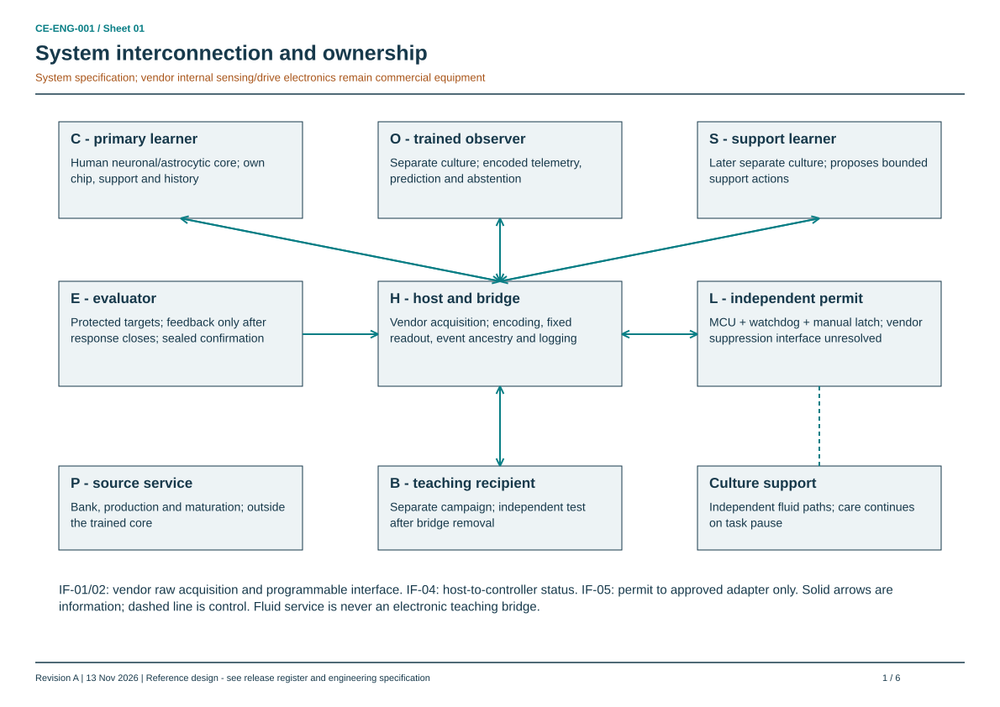
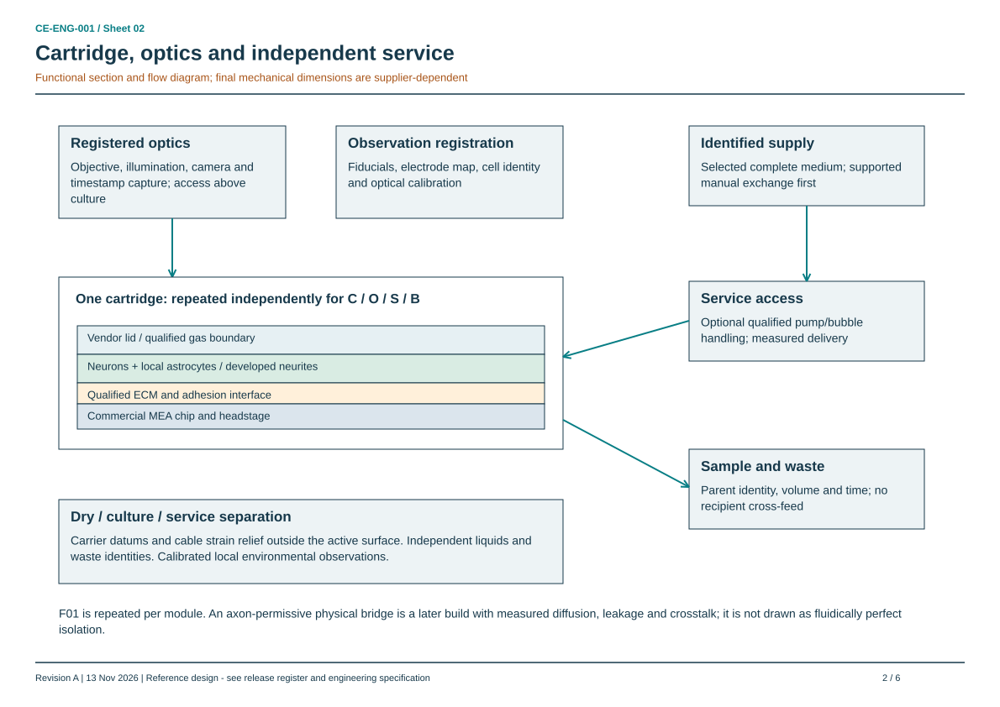
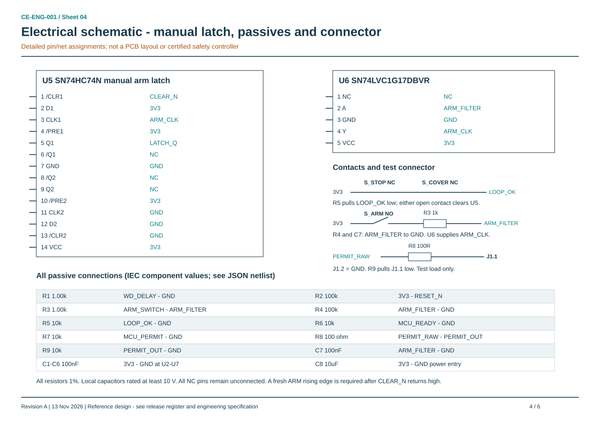

1. Target implementation and release boundaries
The first deliverable is an independently observable, cell-free host and control harness (R0), followed by a single cultured neuronal–astrocytic learner (R1). A separately trained observer or recipient is introduced in R2; a support-policy cartridge is a later R3 candidate. Evaluate one device claim at a time: a working instrument, acquired capability, delayed retention and incremental benefit are separate accomplishments.
Digital & electrical simulation
Defined task, isolated evaluator, time synchronization, test-load permit circuit, audit trail, no culture.
T00 → T01One biological learner
Independent source lot, characterized interface, bounded feedback, replication and delayed task retention.
T02 → T05Observer & recipient
Independent trained observer or teacher–recipient pair with removable electronic join and isolation test.
T06 → T08 / T11Support and replication
Measured marginal support benefit, interference protection, additional modules only if justified.
T09 → T172. Architecture: nine roles, distinct safety boundaries
| Identity | Role | Qualification boundary |
|---|---|---|
| P · Source | Bank, maturation and traceable cell preparation | Qualified lab, source consent, lot documentation |
| C · Core | Neuronal–astrocytic learning cartridge | G1–G4; own medium and electrode map |
| O · Observer | Separately trained encoded-telemetry learner | T06/T07; cannot read protected ground truth |
| S · Support | Later learned routing/rest/review proposals | T09; cannot command hardware directly |
| B · Recipient | Teaching and independent recall comparator | T11; isolated post-bridge performance |
| G · Local glia | Astrocytes inside each characterized cartridge | Selective contribution remains an experiment |
| H · Host | Encoder, artifact mask, timing, logging, bridge and coordinator | R0 simulations and versioned software |
| L · Limit controller | Hardware-independent permission and fault detection | Cannot be outvoted by learner score |
| E · Evaluator | Protected target, blinded analysis and confirmation ledger | Never exposes sealed targets during evaluation |
3. Schematic set and physical partitions
The supplied six-sheet vector drawing set is included locally. These are engineering review schematics, not verified fabrication releases. The commercial MEA supplies proprietary electrode-drive hardware; the prototype permit board only grants a low-voltage logical request. A qualified vendor-side inhibit is a separate unresolved dependency.






Connection contracts
| IF | Connection | Required guarantee |
|---|---|---|
| IF-01 | Headstage ↔ hub | Vendor cable; sampled neural data, channel map, delivered stimulation, instrument faults |
| IF-02 | Hub ↔ H host | Ordered events, acquisition clock, measured latency and stored raw data |
| IF-03 | E evaluator → scorer | Training truth only after response closure; confirmation truth never visible to trainer |
| IF-04 | H host ↔ L limiter | Sequence-numbered health and accepted profile; stale state prevents stimulation |
| IF-05 | Permit board → vendor adapter | Prototype 3.3 V logic inhibit at test load; global vendor-enforced suppression unverified |
| IF-06 | Imaging/sensors → H | Captured timestamp, sensor calibration, location and uncertainty |
| IF-07 | Support sensors → H/L | Measured value, units, freshness, valid/invalid status |
| IF-08 | Fluid source → cartridge | Independent identified liquid path and waste; no shared liquid in initial joins |
Independent permit-board qualification
The R0 reference design proposes Pico H + external watchdog + manual rearm latch + physical fault loop, with command permit withheld until a successful complete control cycle. Its nominal software configuration proposes a 50 ms host heartbeat, 150 ms stale timeout and nominal 200 ms supervisor. These are bench design parameters, not verified biological safety limits. Test high, low, open, unpowered and alternate-client conditions at the final receiving interface before any live use. Never assume a trigger input is a global inhibit.
power-on → HOLD (output low)
manual rearm + valid profile + fresh host + sensor OK
→ permit request → vendor-enforced bounded output
STOP / COVER / watchdog / host loss / stale sensor
→ immediate inhibit request → latched FAULT → manual rearm
NO live profile released by this website.
NO remote API may override Heart limits.4. Setup sequence and acceptance artifacts
Work proceeds by evidence gates, not a calendar promise. The checkboxes below save locally and share state with your notebook. Completing a checkbox records administrative progress only; it does not certify a release gate.
5. Qualified laboratory and receiving environment
The launch package assumes a company-led program partnered with a qualified human-cell research lab. Laboratory authorities specify permissible cell sources, medium/SOP details, viability thresholds, assay controls, incident handling and local biosafety processes. Keep culture care independent of score, reward and host training availability. Source lineage and role semantics are not interchangeable: spinal identity is to be measured, not inferred from the metaphor of a Tree.
| Receipt record | Required fields | Qualification owner |
|---|---|---|
| Cell source | cell source ID; consent/provenance permissions; vendor certificate; batch; release result | Culture lead |
| Culture service | lab SOP/version; identified medium/waste; contamination/service log; physiological measurement | Lab quality |
| Geometry | chip model; carrier datum; electrode map; optics; measured tolerance and access | Engineering lead |
| Interface | selected channels; SNR; artifact mask; evoked response; command delivery and latency | Electrophysiology |
| Trial readiness | randomized arms; frozen primary outcome; sample unit and exclusions | Analysis lead |
| Change control | software/codebook/limits hash; operator; changed component; reason; requalification | Program lead |
6. Core task, truth table and measurable learning
The declared first task is a deliberately small symbolic discrimination: AB and BA produce opposite responses under C0 versus C1; AA and BB require HOLD. Unknown/missing context yields UNRESOLVED; corrupt telemetry yields INVALID. Treat the eight valid context/sequence combinations as a truth-table environment, not as evidence of human language comprehension.
| Context | Input AB | Input BA | Input AA / BB | Missing or unknown |
|---|---|---|---|---|
| C0 | X | Y | HOLD | UNRESOLVED |
| C1 | Y | X | HOLD | UNRESOLVED |
Use development data to select encoder, artifact handling and decoder. Then freeze these before confirmation. Report absolute acquisition and 45-minute / 24-hour retention, not merely an unstable ratio. A training count per electrode is not a count of independent samples. Revisit E08 eligibility, E09 contingent feedback, E12 delayed retention and E29 nested observations.
7. The complete T00–T17 trial map
All 18 trials below are imported from 02_Trials/trials.json. All begin PLANNED_NOT_RUN. The experiment notebook tracks status and run-level metrics separately; checklist completion cannot convert a trial into a scientific success.
| Trial | Question/phase | Prerequisite | Primary outcome |
|---|---|---|---|
| T00 | Software contracts | none | All required invariants pass |
| T01 | Permit-board commissioning | T00 | Measured suppression and manual rearm |
| T02 | Culture/interface qualification | T01 and P01-P20 as applicable | G1-G3 released |
| T03 | Core acquisition | T02 | Learning contrast with uncertainty |
| T04 | Delayed retention | T03 | Absolute retained scores and arm contrasts |
| T05 | Spaced learning | T03 | Delayed difference at equal information/exposure |
| T06 | Observer classification | T02 | Held-out O1 macro recall and false alerts |
| T07 | Observer early warning | T06 | Lead time and precision/recall |
| T08 | Observer joining | T04 and T06 | Added benefit with protected capability |
| T09 | Support learner | T08 | Marginal action-selection benefit |
| T10 | Affect-inspired weights | T00; T08 before living deployment | Held-out utility/calibration and noninferiority |
| T11 | Independent teaching | T04 | B-only delayed result after verified separation |
| T12 | Astrocytic predictive contribution | T04 | Held-out loss improvement |
| T13 | Selective astrocytic mechanism | T12 and targeted assay qualification | Selective causal effect with target engagement |
| T14 | Diversity and renewal | T08 | Contribution minus old-task cost |
| T15 | Physical joining | T08 and new bridge qualification | Route-specific function and quantified leakage |
| T16 | Mesh chain topology | T00; T08 before living chain | Net utility, latency and ancestry integrity |
| T17 | Independent replication | frozen selected candidate | Prospective confirmation of scoped claim |
8. Experiment execution and analysis
Preflight & independent eligibility
Verify source, actual sensor validity, controller permission, isolation of evaluator, current configuration hash and assigned arm. Qualify exclusion criteria without looking at the outcome.
Execute fixed candidate
Log both requested and delivered events and preserve artifact masks, timing, invalid opportunities and any faults. Keep basic support independent of task success.
Confirm without leakage
Disable teaching feedback, use the locked decoder and frozen thresholds, separate recipient/teacher routes when required, and analyze only new preparations for confirmation.
Decide and archive
Report endpoint with uncertainty at preparation/dyad/triad level, protected old-task cost, dropouts, resource cost, and negative outcomes. Record change request for the next candidate rather than rewriting the old outcome.
Illustrative project targets (not measured results)
| Measure | Initial proposal | Required caution |
|---|---|---|
| Core acquisition | 0.80 macro-recall target | No measured expectation; compare biologically matched controls |
| 24-hour retention | 0.75 macro-recall target | Absolute delayed endpoint, not just a retention ratio |
| 7-day retention | 0.70 exploratory target | May be infeasible; prespecified horizon |
| Learning contrast | ≥0.10 vs strongest control | Use independent preparations for uncertainty |
| Protected old tasks | Noninferiority margin 0.05 | Lower confidence bound on change > −0.05 |
| O1 observer | 0.80 macro recall; ≤5% nominal false alerts | Also report alerts/hour and UNKNOWN coverage |
| Joined benefit | 0.05 improvement or predeclared resource benefit | Must compare to matched digital/fixed policy |
| First pilot | T03 proposes six preparations per arm | Pilot is not a powered independent confirmation |
9. Procurement, budget and biological records
These are planning placeholders from the supplied launch file—not supplier quotes, laboratory instructions or binding estimates. Use your notebook to record actual quotes, lot identifiers, and deviations. Hardware interface confirmations and measured culture qualification should control purchases.
| Budget category | Low (USD) | Base (USD) | High (USD) |
|---|---|---|---|
| People | $210,000 | $360,000 | $540,000 |
| Lab and partner services | $50,000 | $90,000 | $150,000 |
| MEA and optics hardware/access | $90,000 | $180,000 | $300,000 |
| Biological materials and assays | $50,000 | $100,000 | $180,000 |
| Host/storage/engineering | $20,000 | $30,000 | $60,000 |
| Contracts/quality/insurance | $20,000 | $40,000 | $70,000 |
10. Data provenance and future API integration
Each record should contain a stable ID, UTC timestamp, module/cartridge IDs, batch and lot, experimental arm, task and codebook versions, locked analysis plan, actual measurement, artifacts and interpretation. The browser notebook persists structured JSON and attachment blobs locally. The future API adapter is deliberately disabled, and cannot submit data until an endpoint and authentication are configured.
{
"schema": "christ-eye.workspace.v2",
"trialId": "T04",
"preparationId": "PREP-...",
"batchId": "BATCH-...",
"runId": "RUN-...",
"arm": "contingent | yoked | control",
"metrics": {"macroRecall": null, "invalidCount": null},
"sourceHash": "...",
"evidence": "unverified | candidate | confirmed | failed",
"attachments": ["ATTACHMENT-ID"]
}See export/import controls and the accompanying API_INTEGRATION.md for later server-side persistence. Protect personally sensitive information; the static site has no authentication and a shared browser is not a laboratory-grade records system.
11. Full source-guided protocols and implementation appendices
This section reproduces the detailed planning texts from the uploaded Project Launch Package v1.0 as readable, locally hosted appendices. They supplement the interactive checklist and T00–T17 experiment records above. These are proposed study contracts and research preparation requirements, not verified live-tissue SOPs or proof that the machine has been built.
Appendix 1 · Complete 18-trial experimental plan
Contains the study rationale, T00–T17 matrix, curriculum, schedule, baseline arms, masking rules, outcomes, analysis and stopping conditions.
Source: 02_Trials/Trials_Plan.md · ChristEye Project Launch Package v1.0
CE-TRIAL-001: staged experimental plan
Objective and trial unit
Determine whether a qualified human-derived neuronal–astrocytic core acquires retained context-dependent capability; whether a separate observer learns useful monitoring; and whether joining trained child modules improves the core without unacceptable loss. Test the affect-inspired arbitration policy first in software, then as a host-side control comparison. A later biological mechanism study is a separate claim.
The biological unit is an independently prepared culture. An experimental dyad contains two independent cultures. A triad contains three. Trials, electrodes, sorted units, imaging regions and repeated days are nested observations. Source line, preparation batch, operator, platform configuration and day are recorded. Shared medium preparation or source pools are blocking factors, not hidden independent replication.
The trials.json file is the machine-readable trial register. No row is marked run or passed. Enrollment counts are planning proposals or null; confirmation sizes require pilot variance and the selected estimand. Every trial has prerequisites, arms, outcomes, exclusions, stopping rules and a decision.
Sequential program
| Stage | Primary question | Required comparison | Unit and decision |
|---|---|---|---|
| T00 | Are data, targets and commands separated? | Correct routes, leakage attempts, stale events, replay | Software episodes; pass invariant checks |
| T01 | Does the permit circuit suppress output on faults? | Normal arm, host loss, watchdog, open loop, reset | Bench assemblies and repeated faults; measured electrical release |
| T02 | Is the chosen culture/interface usable? | Reference preparations and blank chip/material observations | Proposed 6 independent preparations over at least 2 batches; feasibility only |
| T03 | Does contingent feedback improve the core? | Contingent, yoked/exposure-matched, no-teaching | Proposed pilot 6 preparations/arm; estimate effect and variation |
| T04 | Does capability persist after rest? | Immediate and delayed cue-only evaluation; probe-history control | Separate or balanced cohorts at 45 min, 24 h, 7 d |
| T05 | Does spaced experience improve retention? | Spaced vs massed at equal approved exposure and information | Independent preparations; delayed outcome |
| T06 | Does O learn state discrimination? | Trained O, untrained O, feature-matched digital monitor | Independent O and source episodes |
| T07 | Can O predict before the core fails? | Pre-cutoff O vs digital predictor and shuffled labels | Held-out episodes and later preparations |
| T08 | Does joining O help C? | C alone, trained O, untrained O, replayed O, digital O as feasible | Independent dyads; protected-core retention |
| T09 | Does S improve support selection? | Learned S vs fixed coordinator and action-matched schedule | Independent triads; marginal contribution |
| T10 | Do affect-inspired weights help? | No weighting, reliability-only, full policy, shuffled history | Software first; then matched biological-module deployments |
| T11 | Does B retain independently taught capability? | B self-training, trained A, untrained A, replay, software teacher | Independent A/B dyads; B-only delayed tests |
| T12 | Do astrocyte features add information? | Neuronal+environment model vs model adding astrocytic features | Held-out preparations; predictive increment |
| T13 | Is a selected astrocyte mechanism causal? | Targeted qualified comparison plus general-state and unrelated-task controls | New experiment after T12/behavioral evidence |
| T14 | Does diversity or renewal add value? | One added subtype/module vs unchanged and retrained controls | New independent preparations; contribution and cost |
| T15 | Does a physical bridge add value? | Physical vs electronic and matched unjoined arrangements | Separate build version; communication and independence |
| T16 | Do chain depth and redundancy help? | Depth 1/2/3, missing-link and duplicate-input cases | Software first; biological chain only after dyads work |
| T17 | Can another batch/site reproduce the candidate? | Frozen candidate and prespecified controls | Independent confirmation, ideally another operator/site |
Do not run all arms at once. T03/T04 form the first biological campaign. T05 is justified if acquisition is credible but retention is inadequate. T06 may use recorded or simulated source histories before C is mature enough for joint trials. T13–T16 are later research, not prerequisites for beginning the company.
Core curriculum
The starting task uses contexts C0 and C1 and token sequences AB, BA, AA and BB. C0: AB→X and BA→Y. C1 reverses these responses. Repeated symbols require HOLD in either context. Missing context or an unknown token is UNRESOLVED at the interface; invalid recordings are INVALID, not a correct HOLD. This produces eight valid context/sequence combinations.
Start with cue separability and sequence discrimination, then add context reversal, repeated-symbol controls, delayed retrieval and protected old relations. Human-defined meaning comes from the declared task and its counterexamples; words alone do not give cultured neurons human semantics. Later curricula may introduce multi-step conditional choices only after simpler retained capability is established.
One development block proposes 64 balanced valid opportunities. Up to four blocks before a development probe is a bookkeeping default, subject to the preparation’s lower qualified exposure/session limit. The package contains no live stimulation amplitudes or timings. Each task event refers to an approved profile ID whose actual delivered waveform is recorded. Blank profile entries block operation.
Feedback follows response closure, uses approved distinguishable conditions and remains within the same exposure envelope. A yoked control matches exposure without using its own outcome to select feedback. Randomize or counterbalance replay alignment: replay can accidentally correlate with a structured task. Verify actual feedback/outcome contingency rather than asserting mutual information equals zero by construction. No condition withholds basic support.
Train, check and improve
- Check G1–G3, support state, sensor freshness, configuration hash, storage, bridge state and allowed profiles. Record baseline.
- Train using only the training oracle. Record requested and delivered events and all invalid opportunities.
- Freeze encoder mappings, preprocessing and readout; disable teaching feedback for the development probe.
- Enter the assigned quiet or replay condition, then perform the scheduled delayed probe. Rest is not assumed to be sleep.
- Test protected old relations and classify failure: invalid interface, insufficient acquisition, loss after delay, context interference, state change or unresolved cause.
- Revise one principal factor or a preregistered factorial combination. Preserve the predecessor and its failures. Cap a campaign at three candidate revisions before a task/interface review.
- Freeze the selected candidate and evaluate once on sealed confirmation data and fresh preparations. A failed confirmation cannot be converted to success by tuning on its outcomes.
Probes are experience. Compare repeated-probe schedules with a single delayed-probe cohort where retention is the claim. Delay measurements begin from a defined last teaching event and account for recovery from stimulation artifacts and service. A better score after service does not identify a restored memory mechanism.
Observer and support curricula
O1 receives encoded telemetry and distinguishes nominal state, route-review need, support-review need and unknown/missing observations. Begin with simulated or recorded operational faults, not tissue damage. Include quiet-but-valid cultures, missing recordings, slow-but-correct responses, novel contexts and benign large activity events.
O2 predicts an outcome at a declared cutoff before the core’s scored response. Exclude the correct target, future response, retrospective normalization and post-response error flag. Hold out complete episodes and later days. A classifier given both a target and completed answer is an external checker, not an early-warning predictor.
S receives permitted histories and proposes NO_CHANGE, REQUEST_REVIEW, DEFER_TASK or TRY_APPROVED_ROUTE. Rest scheduling can be added after timing is qualified. The coordinator decides whether to implement a proposal. Learning credit uses an independently measured effect on C and protected capabilities, with randomized permissible actions or action-matched controls. S does not change medium or generate new cells directly.
Outcomes and acceptance
The proposed primary core outcome is macro-averaged recall over X/Y/HOLD at 24 hours. Report 45-minute retention separately because transient improvement may disappear early. Report all contexts, raw accuracy, invalid/late/missing opportunities and absolute scores. Initial project targets remain 0.80 acquisition, 0.75 at 24 hours and 0.70 at seven days, with a proposed learning contrast of at least 0.10 versus the strongest relevant biological control. These are project targets, not measured expectations.
Protected capability has a proposed noninferiority margin of 0.05. For change = new − old performance, the prespecified lower confidence bound must exceed −0.05. A nonsignificant difference is not preservation. Joined benefit proposes 0.05 improvement or a preregistered resource benefit at noninferior performance. Choose one primary objective before data collection.
O1 targets 0.80 macro recall with false alerts on at most 5% of nominal episodes; also report false alerts/hour, alert duration and UNKNOWN use. O2 requires positive useful lead time and precision/recall beyond a feature-matched digital model at a frozen threshold. Evaluate calibration using held-out probabilities; a spike-count softmax is not automatically calibrated confidence.
The Understanding report is a vector: acquisition, retention at each delay, generalization, interference, calibration, latency, availability and cost. Do not collapse it into a single metaphysical quantity. A biological learning result may be worthwhile even if a truth-table program solves the toy task more efficiently.
Allocation, analysis and missingness
Randomize preparation assignment within batch after eligibility is determined without looking at outcome. Balance positions and operators where feasible. Keep analyst-facing arm codes concealed until the primary analysis is frozen. The preparation, not the trial, determines the biological sample count. Use a hierarchical model or preparation-level summaries with uncertainty appropriate to the design.
Pilot counts above estimate feasibility and variance. An illustrative two-arm normal approximation with SD 0.08 and a target difference 0.10, two-sided alpha .05 and power .80 gives about 11 analyzable preparations per arm, or 14 enrolled allowing 20% attrition. This is not the final size for multiple arms, bounded outcomes, batch effects, noninferiority or dyads. Recalculate prospectively from the pilot and freeze the result before confirmation.
Retain every enrolled preparation. Separate receiving failure, pretraining exclusion, technical invalidity and post-training biological attrition. Report both scheduled-opportunity availability and valid-trial performance; do not improve the score by removing failed service periods. Dropout associated with training is an outcome, not just missing data. Provide conservative sensitivity analyses and the reason for every exclusion.
A retention ratio (P_delay − P_reference)/(P_immediate − P_reference) is secondary. It is undefined or unstable near a zero denominator, can exceed one or be negative, and needs interval uncertainty. Predefine the reference performance for the chosen metric. For class-balanced macro recall the chance baseline differs from the raw prevalence baseline. Absolute delayed scores and between-arm contrasts remain primary.
Use one frozen primary contrast per campaign; identify secondary and exploratory analyses. Preserve raw timestamps, delivered profiles, channel map, calibration, artifact masks, preparation history and preprocessing versions. Confirmation data are never used to choose a region, threshold or astrocyte ensemble before testing that same hypothesis on them.
Stopping and promotion
Pause task stimulation for invalid support, stale required sensors, invalid command/profile, lost time synchronization, exceeded exposure, unanticipated biological deterioration or failed suppression. Continue qualified culture care. Resume only with documented restoration and requalification appropriate to the fault. Scientific futility, candidate-budget exhaustion and lack of retention are separate stop reasons.
Promote only the measured capability: O1 does not imply O2; 24-hour retention does not imply seven-day persistence; assisted performance does not imply B-only learning; astrocytic prediction does not imply causal storage. T17 closes the selected claim within its declared preparation and task scope. It does not establish a perfect or unrestricted human-understanding system.
Appendix 2 · Engineering specification and permit-board assumptions
Contains the review-level interfaces IF-01–IF-08, cell-free safety circuit reference, watchdog assumptions, wiring and commissioning controls. Not a validated live-device release.
Source: 04_Engineering/Engineering_Specification.md · ChristEye Project Launch Package v1.0
CE-ENG-001: system and circuitry specification
Drawing set and release state
The six-sheet set covers system interconnection, one cartridge and its service path, the complete cell-free permit-board reference circuit, power/connectors/net assignments, child-mesh information routing, and commissioning. SVGs are editable vector drawings; the PDF is the review copy. permit_board_netlist.json is the authoritative point-to-point wiring list for the prototype. It is not a KiCad PCB, Gerber release or an electrical-rule-check certificate.
The commercial HD-MEA supplies its own sensing and electrode-drive electronics. Their proprietary internal schematic is not recreated. The custom circuitry below only grants or denies a low-voltage logical permit. J1 is initially connected to a test load and logic analyzer. A separately confirmed vendor interface must enforce that permit on every source of stimulation before live operation. A trigger input is not assumed to be a global inhibit.
System connections
| Interface | Source → destination | Physical route | Contract |
|---|---|---|---|
| IF-01 | C/O/S/B headstage ↔︎ acquisition hub | Vendor cable | Raw data, selected channels, actual stimulation and errors |
| IF-02 | Hub ↔︎ host H | Vendor-supported data link | Ordered events, acquisition clock and measured latency |
| IF-03 | E → training scorer | Protected process interface | Training targets only after response closure; confirmation targets isolated |
| IF-04 | H ↔︎ L | Dedicated USB serial link | Fresh sequence-numbered status, profile authorization and acknowledgements |
| IF-05 | Permit board J1 → adapter/test load | Short 3.3 V logic lead | Prototype high=permit; low/open/unpowered must suppress at the receiving interface |
| IF-06 | Camera/sensor timestamps → H | Supported digital capture | Clock identity, exposure time and uncertainty |
| IF-07 | Sensor service → L/H | Calibrated instrument interface | Value, units, location, age and validity |
| IF-08 | Each service reservoir ↔︎ its cartridge/waste | Independent identified fluid path | No shared liquid in initial A/B or C/O experiments |
Reference MEA selection is MaxOne-class or a demonstrably equivalent system. Current manufacturer documentation provides raw-data/API access and external synchronization integration; its MaxLab interface separates Python setup/recording from C++ closed-loop streaming. This does not confirm a global hardware inhibit or guarantee the latency required by a future task. Obtain those answers in writing. [EXT-01, EXT-02]
Permit-board reference circuit
Use a Raspberry Pi Pico H as the independent microcontroller, powered through its normal USB connector. Its 3V3 output powers the local logic; do not feed an external supply into that output. Use a common local digital ground. The Pico is separate from H and boots with MCU_READY and MCU_PERMIT low. All vendor equipment retains its own approved power supply.
U2 is TPL5010DDCR. Pin 1 is 3V3, pin 2 ground, pin 3 goes through R1=1.00 kΩ 1% to ground, pin 4 receives DONE, pin 5 supplies WAKE and pin 6 is open-drain RESET_N. The 1 kΩ selection corresponds to a nominal 200 ms watchdog interval; measure actual behavior. Pull RESET_N up with R2=100 kΩ, connect it to Pico RUN and the first gate. A valid DONE edge follows a successful complete control cycle, not an unconditional timer interrupt. The data sheet requires margin before the next WAKE; target a response within 50 ms in the bench firmware. [EXT-04]
U3 and U7 are SN74LVC1G08DBVR AND gates. U3 combines LOOP_OK with RESET_N. U7 combines U3’s output with MCU_READY. U7’s output is CLEAR_N for U5. U4, another 1G08, combines U5.Q with MCU_PERMIT to create PERMIT_RAW. For this DBV package, pins 1/2 are inputs, 3 ground, 4 output and 5 supply. [EXT-05]
U5 is SN74HC74N. Use its first flip-flop: /CLR1=pin 1, D1=2 tied high, CLK1=3 from ARM_CLK, /PRE1=4 tied high, Q1=5, /Q1=6 unconnected, ground=7 and VCC=14. Hold the unused half inactive with /CLR2 pin 13 low, D2 pin 12 low, CLK2 pin 11 low and /PRE2 pin 10 high; pins 8/9 are unconnected. CLEAR_N low resets the latch asynchronously. A new rising ARM edge is required after any clear. [EXT-09]
U6 is SN74LVC1G17DBVR: pin 2 input ARM_FILTER, pin 4 ARM_CLK, pin 3 ground, pin 5 3V3, pin 1 unconnected. S_ARM is a normally open button connecting 3V3 through R3=1 kΩ to ARM_FILTER; R4=100 kΩ and C7=100 nF connect ARM_FILTER to ground. This RC/Schmitt arrangement is an initial button-conditioning design, not a certified debounce interval; test bounce, held-button recovery and power cycling. [EXT-10]
S_STOP and S_COVER are normally closed contacts in series from 3V3 to LOOP_OK; R5=10 kΩ pulls LOOP_OK down. Opening either contact, breaking that lead or losing RESET_N drives CLEAR_N low. MCU_READY has R6=10 kΩ to ground; MCU_PERMIT has R7=10 kΩ to ground. R8=100 Ω connects PERMIT_RAW to J1.1, and R9=10 kΩ pulls J1.1 down. J1.2 is ground. Place C1–C6=100 nF at U2–U7 supplies and C8=10 µF at local power entry.
Pico assignments: GP0/pin 1 MCU_PERMIT; GP1/pin 2 DONE; GP2/pin 4 WAKE; GP3/pin 5 LATCH_Q sense; GP4/pin 6 LOOP_OK sense; GP5/pin 7 MCU_READY; GP6/pin 9 J1 permit sense; pin 30 RUN; pin 36 3V3; pin 38 ground. Other GPIOs are unused in this revision. Verify physical pin numbering against the exact board before assembly. [EXT-03]
Boolean behavior: clear_n = loop_ok AND reset_n AND mcu_ready; the latch becomes zero whenever clear_n is zero, becomes one only on a new ARM rising edge with clear_n high, and otherwise retains state. permit = latch_q AND mcu_permit. Firmware holds ready low while booting, paused or faulted, so a repaired host connection does not automatically rearm. A button held down through a fault cannot create a new rising edge after recovery.
The design detects several ordinary failures but is not a certified single-fault-tolerant safety controller. A short to 3V3, welded contact, stuck gate, common supply fault or incorrect receiving adapter can defeat it. Live deployment requires a reviewed suppression architecture, including the vendor’s bounded stimulation and independent fault behavior. A faster required fault-response time may require a different watchdog or receiving inhibit. The 200 ms supervisor is not a biological exposure limit.
Controller protocol and firmware requirements
Proposed cell-free defaults: host status every 50 ms, stale timeout 150 ms, sequence numbers strictly increasing, unique session nonce, configuration digest match, one pending test command and manual rearm after any fault. These are software prototype values only. The MCU accepts a signed-off profile identifier and bounded event permission, not arbitrary raw voltage requests. Live profile limits remain null until released.
A complete control cycle checks timebase, sensor validity, configuration, host heartbeat, interlock loop, allowed command and cumulative exposure. Only then may it pulse DONE. Status sampling is not enough if the output worker is hung. The internal MCU watchdog and external supervisor are complementary; the hardware latch provides manual rearm. Record the last fault and the actual J1 state before reset where technically possible.
Do not rely on a blanket stop-pump command. The biological service controller has its own qualified response to each fault. Stimulation permit loss must preserve ordinary culture care. Do not use the permit board to switch a reservoir heater or life-support supply.
Mechanical and fluid schematic
Use the vendor’s chip, ring, lid and headstage unmodified for the first build. The carrier locates a datum outside the active surface, provides strain relief and leaves optical access above the well. Return to the same registered electrode map after service. Exact chassis dimensions, objective clearance, seal geometry and connector offsets come from selected parts and a measured tolerance stack; sheet 02 is a functional section, not a machining drawing.
Keep C, O, S and B fluid identities separate. The first release can use supported manual exchange with complete records. Optional perfusion requires a separate validated supply, bubble handling, delivery measurement, sample access, waste route and containment. Pump flow is not inferred from its commanded speed. Thermal and gas recovery are measured at the relevant location. Do not place an arbitrary valve or absorber in a signaling study and assume it is chemically neutral.
Local sensors initially come from calibrated laboratory instruments, not an uncharacterized custom pH electrode amplifier. Record their electrical outputs before designing any adapter. A neural observer can supplement these measurements but cannot certify its own culture temperature or missing sensor data.
Acquisition and storage
At 1,020 channels × 20 ksample/s × an assumed 2 bytes/sample, one raw electrical stream is 40.8 MB/s, 146.88 GB/hour or 3.52512 TB/day in decimal units. Three streams require 122.4 MB/s before metadata and optics. Confirm the actual stored sample format and channel availability. Optical storage is width×height×bytes/pixel×frame rate×recorded duration, plus metadata and compression policy.
Benchmark sustained writing, burst load, file rotation, disk full and restart with synthetic data. A quoted SSD transfer speed is not an end-to-end result. Preserve raw evidence sufficient for the stated claim and document discarded data. Use common captured timing events where supported and measure offset, jitter and drift; browser display time is not the acquisition clock.
Commissioning acceptance
Bench inspection checks component identity, polarity, continuity, shorts, every pin assignment and unconnected outputs. Verify supply and current before connecting the Pico. Then use a logic analyzer to test boot, manual arm, STOP, COVER, READY loss, missing DONE, stuck-high DONE, host loss, held ARM, cable removal, restart and receiving load disconnection. Record worst observed response, not just the nominal value.
The package’s software tests validate state logic and netlist completeness only. They do not execute the board, establish EMI performance, verify analog levels or qualify suppression at the MEA. Live release requires the same tests at the final receiving interface, with evidence that no queued, autonomous, alternate-client or replayed stimulation bypasses permission.
The first electrical build can therefore begin after peer review of this reference circuit. Final instrument integration depends on IF-05 being resolved. If the selected platform cannot provide the required independent suppression, change the interface or platform rather than labeling a software stop as hardware protection.
Appendix 3 · Biological materials and assay qualification
Contains source and lineage qualification, material records, Soil receiving ranges, assay tiers, source conservation and release records. Qualified laboratory-specific recipes are intentionally not invented.
Source: 03_Biology/Material_and_Assay_Plan.md · ChristEye Project Launch Package v1.0
Biological materials, Soil and analytical support
Material strategy
Use qualified human iPSC-derived cells for the requested human substrate. Keep the regional identity explicit. A spinal motor-neuron/astrocyte reference has a direct maturation precedent, but does not demonstrate general learning. A richer spinal excitatory/inhibitory network is a separately qualified candidate. A cortical reference is an optional comparative preparation, not silently renamed as spinal. Brainstem tissue, spinal cord and dendritic spines are different meanings that can coexist in the theory.
Functional Marrow denotes source and developmental constraints. Literal marrow is not a ready neural population. If marrow-donor origin is important, record it as a source requirement and commission a documented reprogramming and neural-differentiation route. Do not add raw marrow cells to the learner or relabel marrow macrophages as resident microglia.
The initial purchase candidates are human spinal motor neurons and spinal astrocytes, for example BrainXell BX-0100 and BX-0650, subject to supplier confirmation for the chosen MEA. The product pages describe these cell categories and supplied supplements; they do not establish compatibility with this custom task or chip. [EXT-06, EXT-07]
| Material record | Use | Release evidence | Initial disposition |
|---|---|---|---|
| BIO-C-REF | Motor-neuron plus regional astrocyte interface reference | Source lot, neuronal and regional identity, usable electrical interface | First receiving/maturation pilot |
| BIO-C-DIV | Defined spinal excitatory/inhibitory community plus astrocytes | Intended subtype identities, functional inhibition, repeatable task responses | Candidate after the reference interface works |
| BIO-O | Separately raised observer | Same initial preparation as C; independent training and qualification | Separate cartridge, separate history |
| BIO-S | Support-policy community | Same initial preparation where possible; candidate action discrimination | Later separate cartridge |
| BIO-B | Teaching recipient | Independent preparation with frozen initial characterization | Dedicated teaching comparison |
| BIO-G | Local astrocytes in each cartridge | Identity, support-related function and observation compatibility | Required locally; an electronic support module cannot replace them |
| BIO-P | Bank and progenitor source | Identity, stability, developmental history and expansion controls | Separate production service |
| BIO-X | OPCs, microglia-like or peripheral support cells | Distinct lineage and functional question | Deferred one addition at a time |
Do not establish separate lineages called accuracy cells, anxiety cells or anger cells. A module’s trained role is an outcome of exposure and validation. Its lineage and training history are separate records.
Receiving and production contract
Require source identity, consent/use permissions, lot and passage history where applicable, viability method, post-thaw yield, regional specification, expected subtype composition, contamination release, residual undifferentiated-cell assessment, shipping conditions and a complete method revision. A quoted cell number is not a live attached cell count. Record received, viable delivered, attached and later surviving populations separately.
Identity panels should be selected by the culture lead rather than inferred from a single marker. Candidate motor-neuron evidence includes MNX1/HB9, ISL1/2 and stage-appropriate CHAT; V2a candidates include VSX2/CHX10 with neuronal and regional evidence. GABAergic/glycinergic candidates need transmitter machinery and a measured inhibitory effect at their maturity. Astrocyte panels can include ALDH1L1, SOX9, S100B and appropriate GFAP with regional and functional evidence. HOXB4 alone is insufficient to establish the intended regional subtype.
Source expansion, differentiation, co-culture maturation and task training remain distinct operations. Qualified developmental methods may use dual-SMAD, retinoic-acid or SHH-pathway stages, but a list of those reagents is not a combined method. A production partner supplies its actual controlled recipe. The package does not invent concentrations, incubation durations or substitutions for an unselected cell/MEA pair.
Soil qualification and material accounting
The selected cell supplier and platform must agree on one complete medium and one adhesion/matrix configuration. Candidate matrix families include PDL/PLO with laminin and separately evaluated alternatives. Candidate basal media include BrainPhys-class formulations, but the base, supplements and stage-specific factors are one versioned composition. Do not stack N2, SM1, B27-type or proprietary kits without reconciling their contents.
For each formulation, record component identity, supplier, lot, stock and final units, preparation owner, stability, storage, assay interference and the culture stage. BDNF/GDNF, ascorbate and cAMP-related support are preparation-dependent; their presence does not encode a memory. Developmental morphogens are not routine maintenance additions unless the selected method calls for them.
| Soil component | Measurement | Reason to keep it separate |
|---|---|---|
| Adhesion/ECM | Attachment, spatial distribution, signal coupling, coating blank | More coverage can change electrode access |
| Ions and buffer | Qualified composition, local pH/osmolality | Excitability change can masquerade as learning |
| Energy substrates | Glucose/lactate or other validated assays with volume and time | Concentration is not metabolic flux or memory content |
| Gas/thermal environment | Calibrated observation near the culture | Incubator display is not necessarily cell-boundary state |
| Trophic support | Method version, stage, receptor/functional context when investigated | Effects can be broad rather than task-selective |
| Service and exchange | Delivered/removed volume, time, mixing and recovery | Service is an exposure and possible hidden task cue |
| Local astrocyte community | Coverage, morphology, functional support measures | Remote electronic advice does not supply local cellular machinery |
The mass-balance estimate over an interval is net uptake = input amount − output amount − change in compartment amount, with abiotic loss and sampling corrections. State units and uncertainty. Use blank medium/material controls for adsorption, evaporation and degradation. Normalize to an explicitly measured cell or protein denominator only if that denominator is appropriate and available.
Raising and releasing each community
G1 releases the source. G2 demonstrates developed structure and viable intended composition. G3 demonstrates usable input/output timing and stable observation. Perform these gates independently for C, O, S and B; matching source banks do not imply matching circuits. The observation window and tolerances are set after a qualification pilot, then frozen before learning comparisons.
Measure attachment, neurite distribution, loss, clustering, synaptic organization and intended population survival. Use matched sacrificial preparations for destructive assays. A culture need not be perfectly stationary; maturation drift must be characterized well enough to distinguish it from the learning effect. Reject an interface with unusable artifacts or inseparable cue families even if its spontaneous firing rate looks high.
Cell counts use the plated area, not just the active electrode area. State whether density refers to total well area, patterned island or active sensing region. The current MaxOne reference active region and electrode design must be checked for the purchased chip generation. Scaling another paper’s cells per plate by a guessed area is not a release method.
Assay tiers and sample preservation
Tier 1 runs with every task: raw electrical data, actual stimulus delivery, validity masks, local support observations, source/medium identity and behavior. Tier 2 adds registered imaging: cell location, morphology and selected calcium/reporter measurements. Tier 3 investigates a specific mechanism using a qualified laboratory assay and targeted comparisons.
Astrocytic calcium is an observation of intracellular dynamics, not a direct readout of remembered content. Activity labeling, NFIA-related recruitment, IGFBP2-related stabilization and Ank2-related persistence are distinct candidate mechanisms from distinct studies. Preserve the distinction between IGFBP2 and IGF2BP2. No manipulation of either is specified as a universal recall command.
Collect conditioned-medium samples only under an approved sampling plan with parent identity, volume, time, replacement and disturbance logged. The first experiment does not cross-feed recipients or claim that a sample contains extracted Understanding. Electrical, optical, molecular and behavioral records answer different questions; none automatically substitutes for the others.
Capacity and purchasing worksheet
For each population, required viable cells = released target per preparation × planned preparations / measured handling yield, plus explicitly justified qualification and assay reserves. Because target and yield are not yet known, materials_plan.json keeps them null and blocks a final order. Assay-only preparations, failed receiving lots, untrained controls and attrition must be included. A vial is not one biological replicate, and multiple fields of view are not independent preparations.
Choose operational coverage so routine support is available during weekends and equipment failures. Life support is independent of accuracy, affect-inspired priority or research budget allocation. Retirement follows the culture lead’s predeclared criteria and preserves failure data.
Appendix 4 · Full curriculum and knowledge spaces
Levels K0–K9, knowledge relation records, child expertise and counterexample strategy.
Source: 02_Trials/Curriculum_and_Knowledge_Spaces.md · ChristEye Project Launch Package v1.0
Curriculum and Knowledge-space expansion
The first core is intended to build human-defined relational capability in human-derived cells. Its task record can grow into a set of retained relations, while each child develops its own learned scope. This curriculum specifies what progress would mean without claiming that a dish has acquired ordinary human language, a person’s autobiographical memory or general human understanding.
| Level | Training content | Required counterexample | Promotion evidence |
|---|---|---|---|
| K0 Interface | Distinguishable cue families and response classes | Sham, invalid and indistinguishable inputs | G3; usable fixed input/output map |
| K1 Sequence | AB versus BA, repeated symbols | Same counts with different order | Held-out sequence discrimination |
| K2 Context | C0/C1 changes the sequence-response relation | Context-blind and final-symbol baselines | Retained reversal with fixed decoder |
| K3 Delayed relation | Cue a learned relation after quiet intervals | Untrained relation and probe-history control | Scoped retention at declared delays |
| K4 Conditional composition | Two previously learned relations select a response | Familiar cues with an invalid combination | New combinations; old skills remain |
| K5 Uncertainty | Unknown context, missing evidence and ambiguous input | Quiet-but-valid and slow-but-correct episodes | Calibrated abstention without trivial silence |
| K6 Observer exchange | Child report changes a permitted core decision | Replayed, shuffled and stale reports | Benefit of relevant fresh information |
| K7 Independent expertise | Different children learn different relation families | Identical-source children with different histories | Independent child skill and useful arbitration |
| K8 Transfer | New cue arrangement or context within the released interface | Superficial similarity without the learned relation | Prespecified generalization beyond shortcuts |
| K9 Continual expansion | New relation or admitted child | Retraining and unchanged-system controls | New contribution with old-task noninferiority |
K4 onward are candidate curricula. The availability of software truth tables does not establish that the preparation can learn them. At every level, define the observation, target, meaning assigned by the human designer, counterexamples, readout and acceptance criterion before training.
A relation record
A Knowledge relation record contains a stable relation ID, source examples, context family, cue/output codebook, teaching history, candidate neuronal ensemble observations, associated astrocyte observations, delayed outcomes, counterexamples and the current claim level. It links to the relevant structure/function/intervention/task graph without collapsing them into one edge. The label is an index to evidence, not an address that directly reads a biological fact.
An engram candidate is nominated on discovery data, then tested selectively on new data and delayed cues. Associated astrocytic participation is registered independently. Both can contribute to the same acquired relation. An axonal projection is a physical communication route, not sufficient evidence that it carries the full content of the relation.
Independent child ownership
Each child’s training data, readout, chronology, source lot, calibration, retained relation set and resource needs are separate. A parent can request a typed answer or review, but cannot overwrite the child’s history by changing a software label. A child can decline an unknown request. Parents and children both undergo isolated reevaluation after joining.
Weights are contextual and revisable. A child reliable in monitoring a route can be unreliable in predicting retention. Its growth stage limits which tasks it may attempt. Anxiety-inspired vigilance can request more observations; anger-inspired protective priority can flag repeated independently verified conflicts. Neither supplies missing biological evidence or grants authority over life support.
Training records and progress
Record a mastery vector for each relation: acquisition, 45-minute/24-hour/seven-day outcomes where tested, context generalization, interference, calibration, response latency and availability. A relation remains unconfirmed if it was only tested during active teaching. Mark failed and unknown relations explicitly; do not remove them from the history to make the Tree appear complete.
Expansion occurs when a missing relation remains after route, support and curriculum checks and a proposed addition has a testable benefit. Prefer an independently raised module with a reversible electronic route. Only later investigate whether a physical bridge or a new cell lineage improves the same declared outcome.
Appendix 5 · Project launch, ownership and first 90 days
Program responsibilities, independent laboratory and software workstreams, budgeting assumptions, deliverables and decision sequence.
Source: 01_Project/Launch_Plan.md · ChristEye Project Launch Package v1.0
Company launch and execution plan
The first product of the project
Build a research instrument that can demonstrate retained, context-sensitive learning in one human-derived neuronal–astrocytic culture, then show whether a separately trained observer improves its operation. A third support-policy learner, independent teaching recipient and physical axon bridge follow only when their predecessors work. General human understanding is a long-range aspiration, not the first acceptance endpoint.
The core C owns its task history. Observer O learns to distinguish measured states and optionally predict an upcoming unreliable response. Support learner S proposes a permitted response. Recipient B tests independent acquisition after teaching. Production P supplies characterized lots; it is separate from the active mesh. Each cartridge contains its own local astrocytic support G. The host H handles timing, encoding, logging and the electronic bridge; evaluator E holds protected targets; limit controller L controls permission independently of learned policy.
There are three different milestones: a working instrument, acquired and retained capability, and useful multi-module contribution. Fund and review them separately. A useful research finding does not require a computing advantage, while a product claim about efficiency does require a matched whole-device comparison.
Starting organization
The initial working model is a company-led program with a qualified laboratory partner. This avoids making a custom cell-production facility a prerequisite for the first experiment. The company owns the task specification, integration, records and software; the laboratory owns the controlled biological methods and culture release. The contracts must settle data ownership, raw-data access, publication rights, background intellectual property, assay failure reporting, shipping responsibility and usable-lot replacement before ordering.
| Responsibility | Initial staffing assumption | Concrete output |
|---|---|---|
| Program and product lead | Founder plus fractional project support | Scope, stage budget, decisions and version control |
| Neural culture lead | 1.0 FTE or named partner lead | Regional lot selection, controlled methods, viability and maturity release |
| Electrophysiology and integration | 1.0 FTE | MEA qualification, codebook, delivered-output evidence |
| Software and embedded systems | 1.0 FTE | Host, isolated evaluator, bridge, records, permit-board firmware |
| Statistics and assay analysis | 0.5 FTE | Estimands, allocation, power update, blinded analysis |
| Lab operations and quality | 0.5 FTE | Inventory, calibration, records and maintenance coverage |
| External specialists | Scoped contracts | Electrical design review, microscopy, stem-cell oversight and counsel |
These are responsibility allocations, not hiring requirements for seven different people. A lead may cover several roles, but the person who optimizes the candidate should not be the only person adjudicating its sealed confirmation result. The founder does not need to become the cell-culture operator to start the company.
Facility and service requirements
Use a site already capable of human-cell research, aseptic culture handling, qualified environmental support, appropriate source storage, waste handling, contamination testing and incident response. Secure microscopy and MEA access during both maturation and evaluation. Reserve independent support and observation for simultaneous modules; a single headstage used sequentially cannot establish real-time coupling between two cartridges.
The engineering bench needs an oscilloscope or logic analyzer, a current-limited low-voltage supply, a multimeter, digital test loads and labeled harnesses. Keep wet culture, dry electronics and service materials partitioned. Use supplier power supplies and approved mains distribution. The reference permit circuit is low voltage; it does not switch building power or drive culture electrodes.
Separate task-control machines from general internet browsing. Preserve full configuration hashes, access roles and a second copy of critical records. Facility continuity planning must distinguish losing task processing from losing life support. A host reboot should not interrupt the culture’s independently qualified support.
The laboratory determines the oversight route for the selected cells and assays, including provenance and consent permissions. ISSCR guidance supports documented quality, provenance and reproducibility; it is guidance, not a substitute for the applicable local review. This program contains no clinical administration, transplantation or whole-embryo production. A later change in scope requires a new project decision. [EXT-08]
Planning budget
The figures in startup_budget.json are company planning allowances in USD, not supplier quotes, salaries surveyed today or commitments to spend. The base scenario assumes six months, four FTE equivalents across the roles above, access through a partner facility and procurement or contracted access to the first instrument configuration. Taxes, international shipping and facility construction are excluded unless added to a quote.
| Cost group | Base allowance |
|---|---|
| People, loaded six-month allowance | $360,000 |
| Lab space and partner services | $90,000 |
| MEA and optical hardware/access | $180,000 |
| Cells, chips and analytical services | $100,000 |
| Host, storage, engineering and calibration | $30,000 |
| Contracts, quality and insurance | $40,000 |
| Subtotal | $800,000 |
| Contingency at 25% | $200,000 |
| Planning total | $1,000,000 |
The illustrative low/base/high totals are $550,000/$1,000,000/$1,625,000, obtained from the explicit assumptions in the JSON. They are runway scenarios, not forecasts of success. Reduce capital through contracted access before reducing independent replication or raw-data retention. Obtain itemized quotes and a phase-specific purchase order before authorizing the next stage.
Day-one work orders
- Appoint the culture, electrical and analysis owners; approve the narrow C0/C1 task and the human-cell sourcing requirement.
- Open the controlled record set. Preserve v0.4 and this package as immutable baselines. Assign one owner to every launch blocker.
- Send the prepared vendor questionnaire through the company’s normal process after choosing recipients. No messages have been sent by this package.
- Request a joint MEA/cell-supplier compatibility discussion: specific chip generation, raw access, two-unit synchronization, optical access, medium and independent stimulation suppression.
- Start T00 with synthetic events and T01 with the permit-board test load. Do not connect the prototype to an instrument trigger or electrode input before its electrical interface is confirmed.
- Obtain the proposed source lot certificates, relevant permissions, exact supplied methods and a reference co-culture quote. Reserve cells only after the receiving and support path is identified.
- Lock the pilot question and exclusions. Set a maximum pilot spend and a decision date based on actual supplier lead times.
First 90 days as a planning sequence
| Window | Work and decision |
|---|---|
| Days 1–10 | Staff owners, obtain RFIs, inspect data contracts, run software harness and design review |
| Days 11–30 | Freeze bench interfaces, assemble and test the cell-free permit board, measure acquisition/storage timing, establish lab methods |
| Days 31–60 | If receiving gates pass: obtain and characterize reference lots; qualify electrode/optics/medium compatibility. Otherwise continue bench work and resolve the blocker |
| Days 61–90 | If G1–G3 pass: run a limited acquisition/retention pilot and estimate preparation-level variation. Do not promise joining by a calendar date |
| After the pilot | Freeze a candidate and fund confirmation only if instrument validity and feasibility support it. Add O, then S/B in separate campaigns |
Human neuronal maturity and vendor lead times may extend these windows. Dates are scheduling assumptions; biological gates are binding. The program may require multiple maturation cycles. Do not allocate all funding to hardware before the pilot proves usable preparations can be obtained consistently.
Decision and change records
Every promotion names the data, protocol version, independent reviewer, unresolved limits and scope of the claim. A failed candidate remains in the record. A supplier substitution, new medium, new cell subtype, stimulation revision or changed readout creates a successor configuration and triggers the relevant requalification.
Ready today: planning, contract drafting, vendor RFIs, offline software and a reviewed cell-free prototype. Not yet released: living stimulation, final chassis manufacture, proprietary MEA internal circuitry, biological affect mechanisms and a broad human-understanding claim. The release register gives a concrete closure test for each item rather than leaving a general warning.